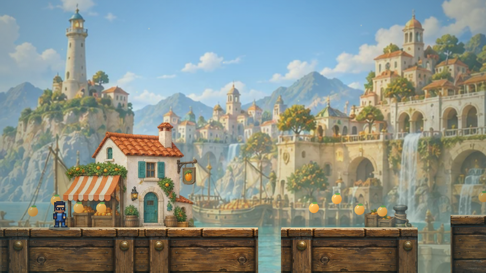
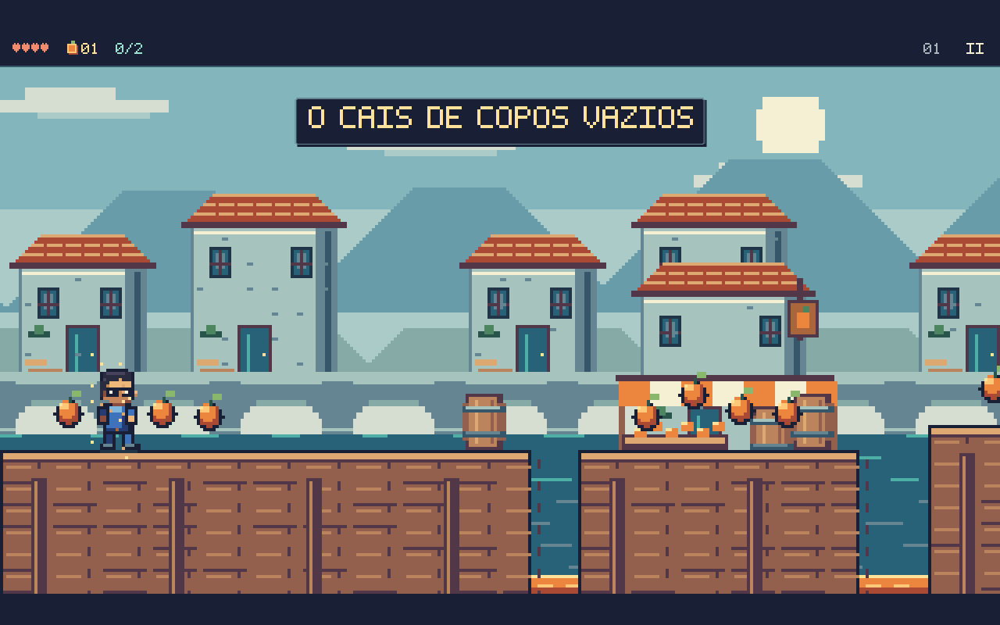
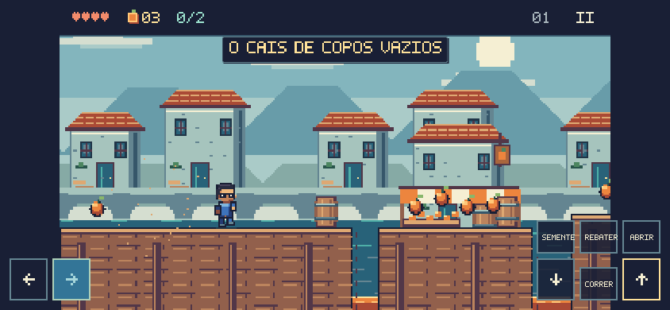

Nova revisão: cenários, materiais e animações — ver a revisão atual.
Cenários atualizados: ver a nova revisão dos fundos, vegetação e arquitetura, com antes e depois das 14 fases.
Integração da interface: janela, HUD, diálogos e menus integrados ao World em 8/10.
Super Feka Gaps World · 7 de outubro de 2026
O Império da Delícia,
na escala do World.
Movimento compartilhado, percursos recalibrados e pixel art construída na mesma grade do jogo principal. Esta página reúne as comparações e as evidências da revisão.
320 × 180grade nativa de arte
60 Hzmesmo Player do World
36 selosrotas de coleta verificadas
50 cenascapturas de todas as fases
A diferença aparece na tela — e no controle.
A versão anterior misturava ilustrações filtradas com personagens em outra escala. A nova arte usa contornos, cores, detalhes e animações em pixels inteiros. Feka, bandeiras, tipografia e proteção após dano vêm dos componentes compartilhados do World.

Antes · movimento próprio e arte em outra escala. Depois · mesma grade, jogador e linguagem visual do World.
Depois · mesma grade, jogador e linguagem visual do World.Uma revisão de ponta a ponta.
Cais, pomares, aquedutos, reservatórios, arquivo, refinarias e cidadela receberam cenários nativos. Casas, mercados, moinhos, arquivos, tanques e torres identificam os trechos; os objetos de jogo conservam contraste e contornos mais fortes.
Capturas do renderizador real em posições preparadas para inspeção. São evidência visual, não partidas completas.
Os trechos altos foram ajustados ao salto nativo: salto segurado nas rotas comuns, molas nos pomares, elevadores e jatos nas rotas de água. Os testes percorrem os 36 desafios de coleta sem alterar posição ou velocidade durante a tentativa.
Personagens desenhados para este jogo.
Oito famílias de inimigos, Jajá, Guina e os objetos de coleta usam a paleta do World. As poses mostram preparação, ataque, recuperação e atordoamento. Os retratos dos diálogos usam os mesmos sprites dos encontros.
Amostra de poses. As sequências completas são editáveis em DeliciaPixelSprites.ts, usando o PixelGrid do projeto.
O mesmo jogador atravessa o capítulo.
| Área | O que foi integrado |
|---|
| Movimento | O capítulo instancia o mesmo Player: aceleração, frenagem, corrida, salto variável, tolerância de borda, buffer de pulo e sentada. O rebote em inimigos é compartilhado com a campanha. |
| Ritmo | Passo fixo de 60 Hz. Shift/X segurado corre; o dash exclusivo que concedia invulnerabilidade foi substituído pela corrida do World. |
| Câmera e terreno | Seguimento compartilhado, espaço para as rotas altas e arenas que mantêm Feka visível. O adaptador de terreno preserva colisões laterais, tetos, plataformas, balsas, elevadores e esteiras. |
| Identidade do capítulo | Sementes, defesa, válvulas em sequência, pressão dos chefes, memórias e santuários permanecem como desafios próprios. Os IDs de fases, coletas e saves foram preservados. |
| Navegação | Entrada e retorno pelo mapa compartilhado, dentro do mesmo documento. O teste de navegador confirma que o capítulo e o World utilizam a mesma classe de jogador. |

Capítulo carregado pelo mapa do World.
Controles de toque em 844 × 390, sem rolagem horizontal.O que foi conferido.
Comparação quadro a quadro com o World, testes de colisão e recuperação, travessias das 12 rotas de exploração a 60 e 120 Hz, 36 desafios de selos e vitória nos dois chefes com movimento e combate reais da simulação.
No navegador: teclado, corrida, salto, sentada, pausa, controles de toque, entrada pelo mapa e retorno ao World. Nas 50 capturas de cenário, todos os blocos de 3 × 3 pixels físicos respeitam a grade nativa.
Os testes das rotas isolam a geometria de inimigos e prensas. Os testes de chefes mantêm seus ataques e colisões. Essa combinação verifica integração e alcançabilidade; o ajuste fino de dificuldade ainda pode evoluir com partidas humanas.
Relatório técnico e comandos de reprodução · Medição das 50 cenas · Verificação no navegador